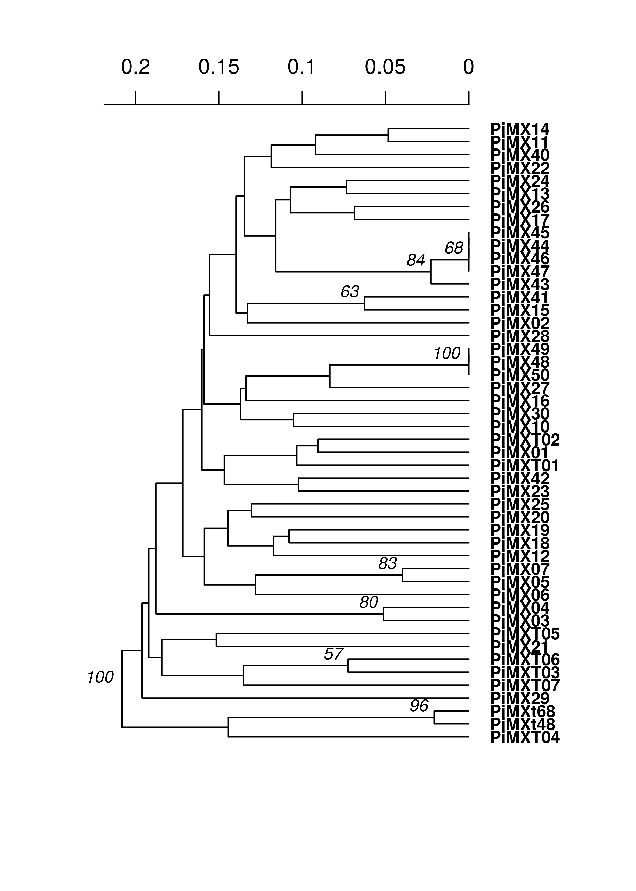

Population structure: \(G_{ST}\), genetic distance, and clustering
ZN Kamvar, SE Everhart and NJ Grünwald
In this chapter we explore various ways of assessing if population are structured (e.g., differentiated). You can think of population structure as identifying clusters or groups of more closely related individuals resulting from reduced gene flow among these groups. Populations can be studied to determine if they are structured by using, for example, population differentiation summary statistics (e.g. \(G_{ST}\)), clustering or minimum spanning networks. Note, that this chapter will utilize many data sets due to the unique features offered by each. Let’s first look at an example of population differentiation based on \(G_{ST}\).
\(G_{ST}\) an example with Felis catus data.
Assessing genetic diversity almost always starts with an analysis of a parameter such as \(G_{ST}\). There are lengthy debates as to what measure of differentiation is better (Meirmans & Hedrick, 2011). Instead of going into that lengthy debate, it would be more worthwhile to point you into the direction of a package dedicated to Modern Methods of Differentiation called mmod. We will use the data set nancycats containing 17 colonies of cats collected from Nancy, France. As cats tend to stay within small groups, we expect to see some population differentiation. In terms of these diversity measures, an index of \(G_{ST} = 0\) indicates no differentiation, whereas \(G_{ST} = 1\) indicates that populations are segregating for differing alleles.
Let’s load the package and the example data set:
library("mmod")
data("nancycats")
nancycats## /// GENIND OBJECT /////////
##
## // 237 individuals; 9 loci; 108 alleles; size: 145.3 Kb
##
## // Basic content
## @tab: 237 x 108 matrix of allele counts
## @loc.n.all: number of alleles per locus (range: 8-18)
## @loc.fac: locus factor for the 108 columns of @tab
## @all.names: list of allele names for each locus
## @ploidy: ploidy of each individual (range: 2-2)
## @type: codom
## @call: genind(tab = truenames(nancycats)$tab, pop = truenames(nancycats)$pop)
##
## // Optional content
## @pop: population of each individual (group size range: 9-23)
## @other: a list containing: xyNow we will use Hendrick’s standardized \(G_{ST}\) to assess population structure among these populations (Hedrick, 2005).
Gst_Hedrick(nancycats)## $per.locus
## fca8 fca23 fca43 fca45 fca77 fca78 fca90
## 0.4750445 0.2956688 0.2675766 0.2653163 0.4855829 0.1933327 0.3807578
## fca96 fca37
## 0.3913924 0.1609576
##
## $global
## [1] 0.3084895What does this output tell us?
Next we will look at genetic distance to find related groups of individuals.
Genetic Distance
If we wanted to analyze the relationship between individuals or populations, we would use genetic distance measures which calculate the “distance” between samples based on their genetic profile. These distances can be visualized with heatmaps, dendrograms, or minimum spanning networks. In the package poppr, there are several distances available:
| Distance | Function | Marker type | Can handle missing data | |
|---|---|---|---|---|
| Bruvo’s distance | bruvo.dist |
microsatellite | yes | |
| Edwards’ distance | edwards.dist |
any | no | |
| Nei’s distance | nei.dist |
any | no | |
| Provesti’s distance | provesti.dist |
any | yes | |
| Reynolds’ distance | reynolds.dist |
any | no | |
| Rogers’ distance | rogers.dist |
any | no | |
| Provesti’s distance | bitwise.dist |
SNP | yes |
One common way to visualize a genetic distance is with a dendrogram. For this example, we will use the microbov data set (Laloe et al., 2007). This contains information on 704 cattle from both Africa and France over several different breeds. We can create a dendrogram over all 704 samples, but that would be difficult to visualize. For our purposes, let’s take ten random samples and calculate Provesti’s distance, which will return the fraction of the number of differences between samples:
library("poppr")
library("ape") # To visualize the tree using the "nj" function
library("magrittr")
data(microbov)
set.seed(10)
ten_samples <- sample(nInd(microbov), 10)
mic10 <- microbov[ten_samples]
(micdist <- provesti.dist(mic10))## FRBTBDA35243 AFBTSOM9386 FRBTBAZ26396 FRBTGAS9052 AFBIZEB9462
## AFBTSOM9386 0.7500000
## FRBTBAZ26396 0.6000000 0.6833333
## FRBTGAS9052 0.6333333 0.8500000 0.5333333
## AFBIZEB9462 0.7166667 0.6666667 0.7833333 0.8500000
## AFBTND211 0.6333333 0.5666667 0.6833333 0.7333333 0.8000000
## AFBTSOM9362 0.6000000 0.5333333 0.6666667 0.8166667 0.7000000
## AFBTSOM9360 0.7000000 0.5166667 0.6000000 0.7166667 0.7333333
## FRBTCHA25069 0.6166667 0.7000000 0.5833333 0.6833333 0.8000000
## FRBTBAZ26388 0.5333333 0.7000000 0.5500000 0.6333333 0.7500000
## AFBTND211 AFBTSOM9362 AFBTSOM9360 FRBTCHA25069
## AFBTSOM9386
## FRBTBAZ26396
## FRBTGAS9052
## AFBIZEB9462
## AFBTND211
## AFBTSOM9362 0.5333333
## AFBTSOM9360 0.5500000 0.5666667
## FRBTCHA25069 0.6500000 0.7333333 0.7166667
## FRBTBAZ26388 0.6000000 0.6666667 0.6833333 0.6166667The above represents the pairwise distances between these 10 samples. We will use this distance matrix to create a neighbor-joining tree.
theTree <- micdist %>%
nj() %>% # calculate neighbor-joining tree
ladderize() # organize branches by clade
plot(theTree)
add.scale.bar(length = 0.05) # add a scale bar showing 5% difference.
Notice that the sample names start with either “AF” or “FR”. This indicates their country of origin and we are seeing that the populations cluster correspondingly. Of course, a tree is a hypothesis and one way of generating support is to bootstrap loci. This can be achieved with the poppr function aboot.
set.seed(999)
aboot(mic10, dist = provesti.dist, sample = 200, tree = "nj", cutoff = 50, quiet = TRUE)##
## Phylogenetic tree with 10 tips and 8 internal nodes.
##
## Tip labels:
## FRBTBDA35243, AFBTSOM9386, FRBTBAZ26396, FRBTGAS9052, AFBIZEB9462, AFBTND211, ...
## Node labels:
## 100, NA, NA, 71.5, NA, NA, ...
##
## Unrooted; includes branch lengths.The bootstrap value of 100 on the node separating the French and African samples gives support that the country of origin is a factor in how these breeds are structured. If we wanted to analyze all of the breeds against one another, it would be better to create a bootstrapped dendrogram based on a genetic distance. To do this, we will add 3 stratifications to the microbov data set: Country, Breed, and Species. We will then set the population to Country by Breed, convert the data to a genpop object and then create a tree using aboot with Nei’s genetic distance.
# Setting up the data
strata(microbov) <- data.frame(other(microbov))
microbov## /// GENIND OBJECT /////////
##
## // 704 individuals; 30 loci; 373 alleles; size: 1.1 Mb
##
## // Basic content
## @tab: 704 x 373 matrix of allele counts
## @loc.n.all: number of alleles per locus (range: 5-22)
## @loc.fac: locus factor for the 373 columns of @tab
## @all.names: list of allele names for each locus
## @ploidy: ploidy of each individual (range: 2-2)
## @type: codom
## @call: genind(tab = truenames(microbov)$tab, pop = truenames(microbov)$pop)
##
## // Optional content
## @pop: population of each individual (group size range: 30-61)
## @strata: a data frame with 3 columns ( coun, breed, spe )
## @other: a list containing: coun breed spenameStrata(microbov) <- ~Country/Breed/Species
# Analysis
set.seed(999)
microbov %>%
genind2genpop(pop = ~Country/Breed) %>%
aboot(cutoff = 50, quiet = TRUE, sample = 1000, distance = nei.dist)##
## Converting data from a genind to a genpop object...
##
## ...done.
##
## Phylogenetic tree with 15 tips and 14 internal nodes.
##
## Tip labels:
## AF_Borgou, AF_Zebu, AF_Lagunaire, AF_NDama, AF_Somba, FR_Aubrac, ...
## Node labels:
## 100, 100, 99.8, 93.1, 92.9, 63.8, ...
##
## Rooted; includes branch lengths.Now we can see that, in all 1,000 bootstrapped trees, the African and French samples were each in separate clades. Of course, dendrograms are only one type of analysis you can use genetic distances for. Below is a table describing some of the different analyses for which you can utilize genetic distance:
| Analysis | Function | Package | Note |
|---|---|---|---|
| Bootstrapped dendrograms | aboot |
poppr | |
| Mantel Test | mantel.randtest |
ade4 | To be used with geographic distance matrix |
| Principle Coordinates Analysis | cmdscale |
stats | |
| DAPC | dapc |
adegenet | Convert to matrix with as.matrix |
| Minimum Spanning Networks | poppr.msn |
poppr | requires a distance matrix; cannot handle genpop |
K-means hierarchical clustering
A recent study reported that the origin of the potato late blight pathogen Phytophthora infestans lies in Mexico as opposed to South America (Goss et al., 2014). We saw in the previous chapter that South American populations showed signatures of clonal reproduction while Mexican populations showed no evidence rejecting the null hypothesis of random mating. In this section, we will use K-means clustering in combination with bootstrapped dendrograms to see how well this pattern holds up. Clonal populations should have short terminal branch lengths and should cluster according to those branches. Panmictic populations will show no clear pattern. Let’s look at the data:
library("poppr")
data("Pinf")
Pinf##
## This is a genclone object
## -------------------------
## Genotype information:
##
## 72 multilocus genotypes
## 86 tetraploid individuals
## 11 codominant loci
##
## Population information:
##
## 2 strata - Continent, Country
## 2 populations defined - South America, North AmericaFirst, we will perform a cluster analysis:
MX <- popsub(Pinf, "North America")
MXclust <- find.clusters(MX)
MX_PCA
## Choose the number PCs to retain (>=1):> 50PC stands for principal components, which are unit-less transformations of your data that explain the variance observed. For the purposes of find.clusters, we can keep as many as we want.

MX_CLUSTER
## Choose the number PCs to retain (>=2:> 3BIC stands for “Bayesian Information Criterion”. The lower the BIC value, the better. On the x axis are the number of clusters. We see that there is a bend at 3 clusters, indicating that the data clusters optimally into three groups.
And now we can see the cluster assignments:
MXclust## $Kstat
## NULL
##
## $stat
## NULL
##
## $grp
## PiMX01 PiMX02 PiMX03 PiMX04 PiMX05 PiMX06 PiMX07 PiMX10 PiMX11
## 1 1 3 2 2 2 2 3 3
## PiMX12 PiMX13 PiMX14 PiMX15 PiMX16 PiMX17 PiMX18 PiMX19 PiMX20
## 2 3 3 1 3 1 2 2 2
## PiMX21 PiMX22 PiMX23 PiMX24 PiMX25 PiMX26 PiMX27 PiMX28 PiMX29
## 1 3 1 3 2 1 3 3 2
## PiMX30 PiMX40 PiMX41 PiMX42 PiMX43 PiMX44 PiMX45 PiMX46 PiMX47
## 3 3 1 1 1 1 1 1 1
## PiMX48 PiMX49 PiMX50 PiMXT01 PiMXT02 PiMXT03 PiMXT04 PiMXT05 PiMXT06
## 3 3 3 1 1 2 2 1 2
## PiMXT07 PiMXt48 PiMXt68
## 2 2 2
## Levels: 1 2 3
##
## $size
## [1] 17 16 15We will go through the same procedure for the South American population.
SA <- popsub(Pinf, "South America")
SAclust <- find.clusters(SA)
SA_PCA
## Choose the number PCs to retain (>=1):> 30
SA_CLUSTER
## Choose the number PCs to retain (>=2):> 4Notice here that there is no local minimum in the curve. This indicates that there might not be enough information in the data set to properly cluster. We will go ahead by choosing the highest number of clusters:
Trees
Now we will build trees. We are using Bruvo’s distance since polyploids bias calculation of other distances:
pinfreps <- c(2, 2, 6, 2, 2, 2, 2, 2, 3, 3, 2)
MXtree <- bruvo.boot(MX, replen = pinfreps, cutoff = 50, quiet = TRUE)
SAtree <- bruvo.boot(SA, replen = pinfreps, cutoff = 50, quiet = TRUE)We see very long terminal branches in the MX tree. Let’s see how the groups we found with the clustering algorithm match up:
library("ape")
cols <- rainbow(4)
plot.phylo(MXtree, cex = 0.8, font = 2, adj = 0, tip.color = cols[MXclust$grp],
label.offset = 0.0125)
nodelabels(MXtree$node.label, adj = c(1.3, -0.5), frame = "n", cex = 0.8,
font = 3, xpd = TRUE)
axisPhylo(3)You can see that the assigned clusters don’t necessarily group with the dendrogram clusters. Let’s see what happens when we view this with the South American population:
plot.phylo(SAtree, cex = 0.8, font = 2, adj = 0, tip.color = cols[SAclust$grp],
label.offset = 0.0125)
nodelabels(SAtree$node.label, adj = c(1.3, -0.5), frame = "n", cex = 0.8,
font = 3, xpd = TRUE)
axisPhylo(3)
Everything clusters together nicely, further supporting a non-panmictic population.
References
Goss EM., Tabima JF., Cooke DEL., Restrepo S., Fry WE., Forbes GA., Fieland VJ., Cardenas M., Grünwald NJ. 2014. The Irish potato famine pathogen Phytophthora infestans originated in central mexico rather than the andes. Proceedings of the National Academy of Sciences 111:8791–8796. Available at: http://www.pnas.org/content/early/2014/05/29/1401884111.abstract
Hedrick PW. 2005. A standardized genetic differentiation measure. Evolution 59:1633–1638. Available at: http://dx.doi.org/10.1111/j.0014-3820.2005.tb01814.x
Laloe D., Jombart T., Dufour A-B., Moazami-Goudarzi K. 2007. Consensus genetic structuring and typological value of markers using multiple co-inertia analysis. Genetics Selection Evolution 39:545–567. Available at: http://dx.doi.org/10.1051/gse:2007021
Meirmans PG., Hedrick PW. 2011. Assessing population structure: \(F_{ST}\) and related measures. Molecular Ecology Resources 11:5–18. Available at: http://onlinelibrary.wiley.com/doi/10.1111/j.1755-0998.2010.02927.x/full